Salesforce1 makes it easy to navigate through related objects. In this module, you create a new Expense Report object, and you define a Master-Detail Relationship between Expense Report and Expense. You then use the Salesforce1 Mobile App to create expenses that belong to an expense report. You can then visualize expenses by expense report, and see the expense report total.
In Setup, select Build > Create > Objects
Click New Custom Object, and define the Expense Report object as follows (accept the default values for the properties that are not mentioned below):
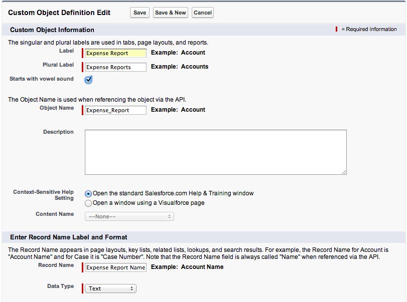
Click Save
In the Custom Fields & Relationships section, click New, and create a Status field defined as follows:
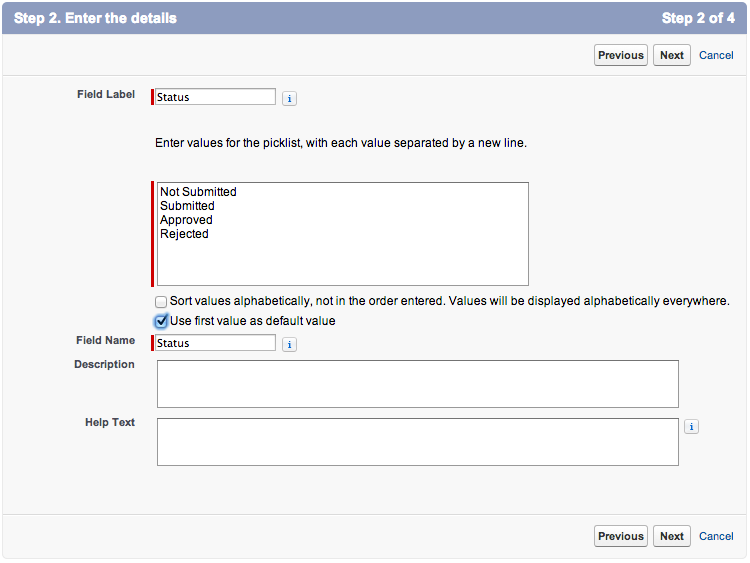
Click Next, Next, Save
In the Salesforce.com app in your browser, delete all the expenses to avoid constraint issues
In Setup, select Build > Create > Objects and click the Expense link
In the Custom Fields & Relationships section, click New, and create an Expense Report field defined as follows:
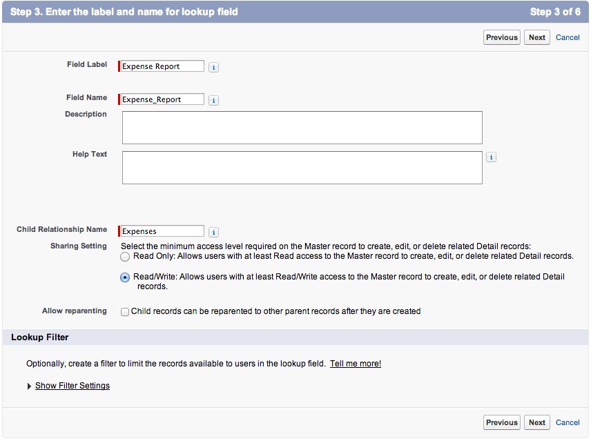
Click Next, Next, Next, and Save
To calculate and display the total of each expense report, add a Roll-Up Summary field to the Expense Report object:
In Setup, select Build > Create > Objects and click the Expense Report link
In the Custom Fields & Relationships section, click New, and create a Total field defined as follows:
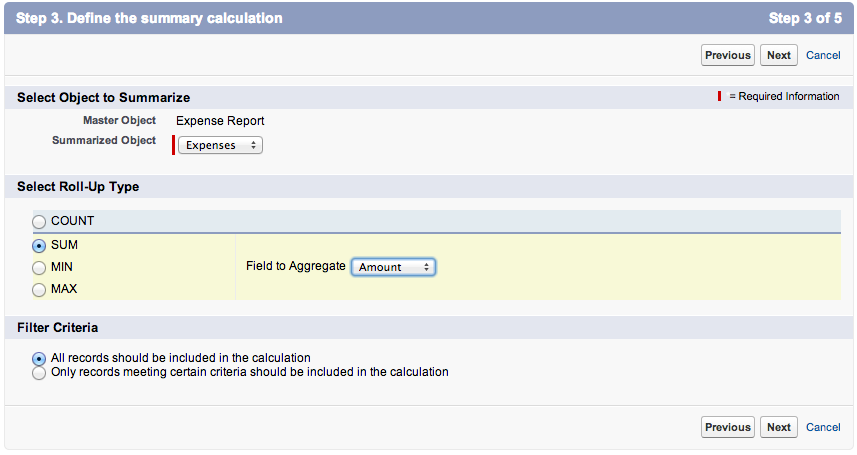
Click Next, Next, Save
In this step, you create a Tab to provide access to the Expense Report object both in the Salesforce.com app in your browser and in the Salesforce1 Mobile App.
In Setup mode, select Build > Create > Tabs
In the Custom Object Tabs section, click New
Select Expense Report as the Object, click the magnifier icon next to Tab Style and select the Airplane icon
Click Next, Next
Uncheck the Include Tab checkbox, check the Expenses checkbox, and click Save
Tap the menu icon (upper left corner)
In the menu, tap More... under Recent
Tap Expense Reports
If Expense Reports doesn't appear under More..., pull (swipe down and release) the menu to refresh it
Tap New, and enter a new expense report
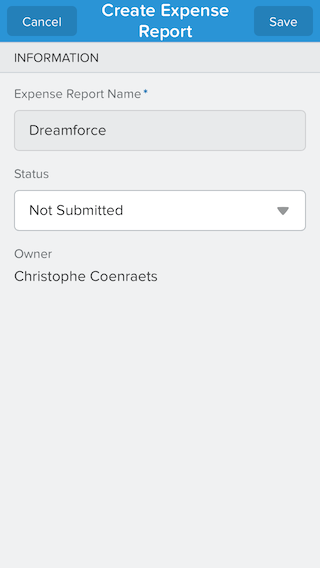
Click Save (upper right corner). The Expense Report details screen appears.
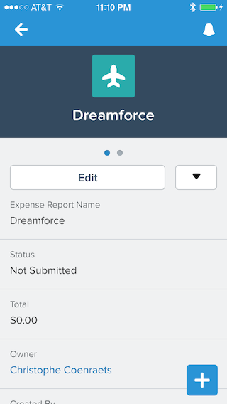
If you get a message indicating that "The page you are trying to access is not available on mobile devices", close the Salesforce1 Mobile App and restart it. This will only happen once and it will only happen during development.
Tap the menu icon (upper left corner)
In the menu, tap Expenses under Recent
Tap New and add a couple of expenses for the expense report you just created
Go back to the expense report details view and notice that the Total field includes the new expenses
If the total has not been updated pull (swipe down and release) the view to refresh it.
Swipe left and notice that the Expenses related list automatically appears
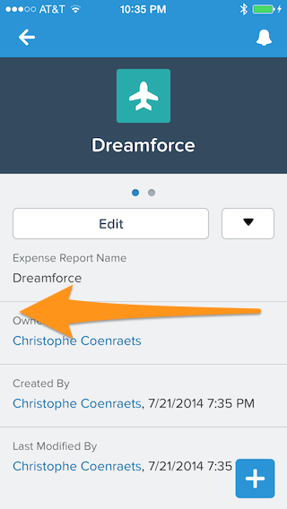 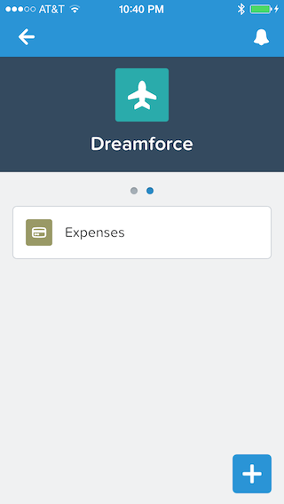
Tap the Expenses related list to display the list of expenses for that expense report
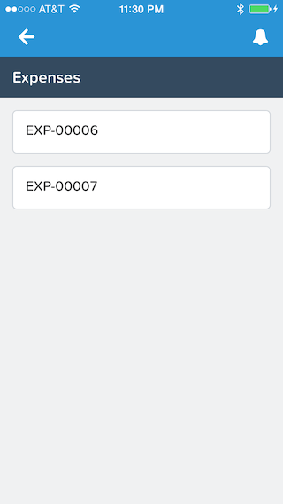
If the list is empty, pull it (swipe down and release) to refresh it.
Tap an expense to see the details
For faster access, you can pin frequently used items at the top of the Recent menu item: you will no longer need to go find an object deep under the More... item.
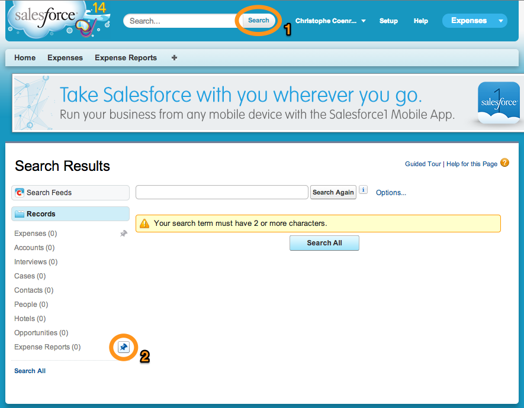
In the full Salesforce.com app, click the Search button in the header
You don't need to type anything in the search box: we just need the Search Results by Records to appear in the left navigation.
In the Search Results (left navigation), mouse over Expense Reports, and click the Pin button
In the Salesforce1 Mobile App, tap the menu icon (upper left corner)
If Expense Reports doesn't appear as the first item under Recent, pull (swipe down and release) the menu to refresh it
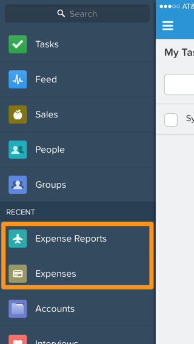
In a Master-Detail Relationship, every child record must have a parent. However, the New Expense Global Action Layout you created in Module 9 does not include the Expense Report field to let the user specify the parent. To add the Expense Report field to the New Expense Global Action layout:
In Setup mode, select Build > Create > Global Actions > Actions
Click Layout to the left of New Expense
Drag the Expense Report field to the top of the layout and click Save
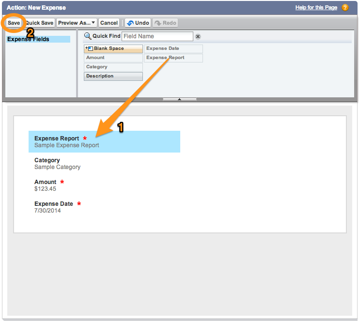
Using the instructions in Module 6 as a reference, create a Mobile Layout for the Expense Report object that only displays the information that mobile users really need
Using the instructions in Module 7 as a reference, create a Compact Layout for the Expense Report object so that the record highlight area looks like this:
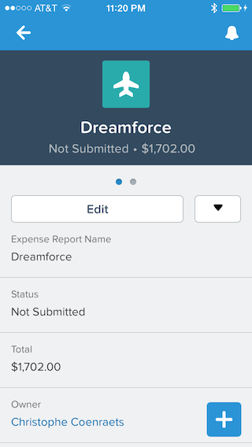